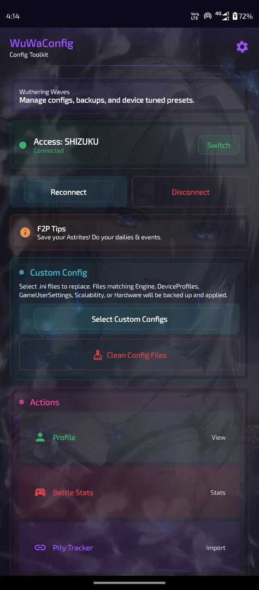
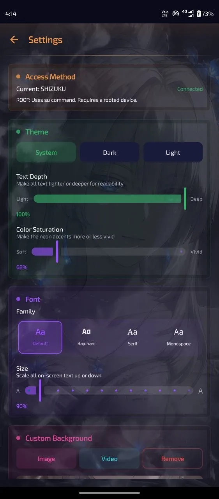
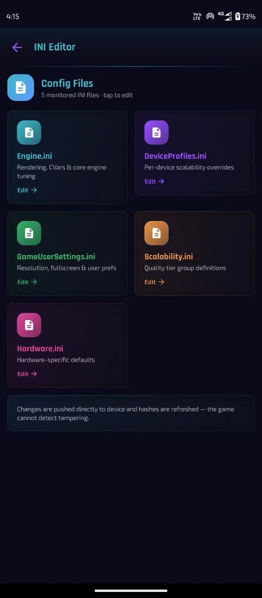
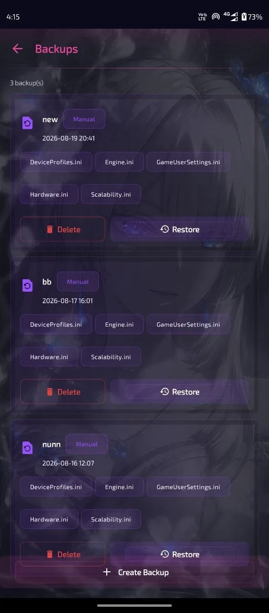
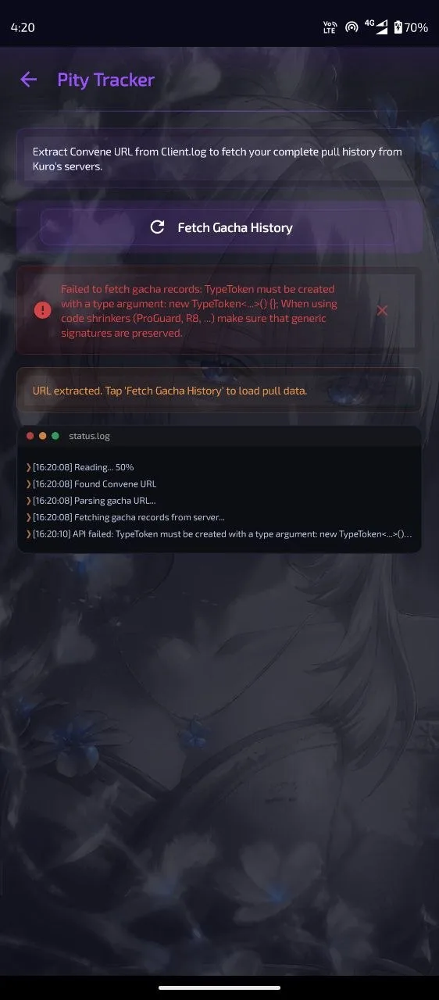
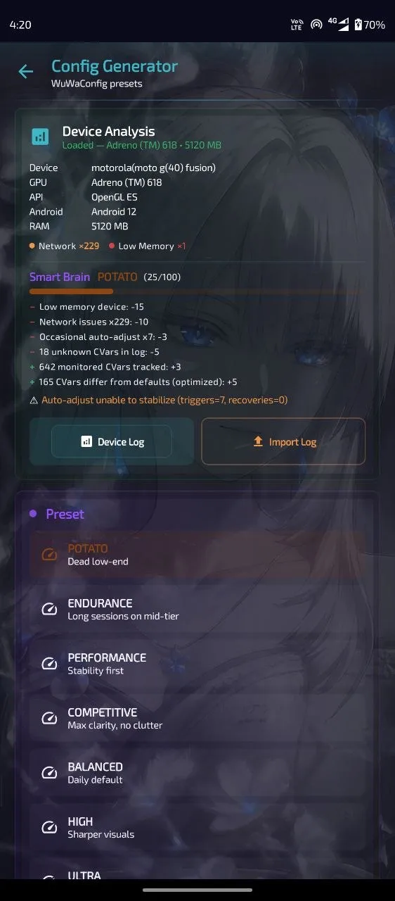

Built by a PlayerFor PlayersConfig EditorAuto GeneratorNo RootOpen SourceZero Telemetry
WuWaConfig — v1.1.6 / Open Source / MIT
WuWaConfig — Fix Lag, Boost FPS & Generate Custom Configs for Wuthering Waves AndroidFree • Open Source • No Root • Vulkan API • 60/90/120 FPS Unlock
WuWaConfig is a free Android game tool for Wuthering Waves. It helps you generate config files and optimize your game graphics according to your choice, and it fixes lag. It also comes with many more features, like enabling the Vulkan API and unlocking 60, 90 or 120 FPS. And there is a lot more inside.
SNAPDRAGON 8 ELITEDIMENSITY 9400SNAPDRAGON 8 GEN 3EXYNOS 2400SNAPDRAGON 8 GEN 2DIMENSITY 9300TENSOR G5SNAPDRAGON 8+ GEN 1KIRIN 9010DIMENSITY 9200TENSOR G4SNAPDRAGON 888EXYNOS 2200DIMENSITY 9000TENSOR G3SNAPDRAGON 865SNAPDRAGON 7+ GEN 3DIMENSITY 8300EXYNOS 2100KIRIN 9000SNAPDRAGON 7 GEN 3DIMENSITY 8100TENSOR G2SNAPDRAGON 778GSNAPDRAGON 695DIMENSITY 7300EXYNOS 1380HELIO G99DIMENSITY 6100+HELIO G96
5,889CVars in Database
735Monitored CVars
350CVars per Config
31Restricted CVars
18CVar Categories
8Config Presets
13Navigable Screens
01 / Features
A Complete Tuning Arsenal
From automatic hardware analysis to manual INI surgery, gacha math and battle telemetry — all on-device.
F.01
Config Generator
8 presets from Potato to Cinematic. SmartBrain scores your hardware and writes 5 optimized INI files — ~350 CVars grouped into commented, topic-by-topic blocks — with 24 toggleable options and 23 experimental CVars.
120 FPS5 INI FilesUltra QualityF.02
SmartBrain Scoring
Scores your device 0–100 from a baseline of 50 with 20+ weighted signals — GPU tier, RAM, Vulkan, thermals, OOM history — then recommends the optimal preset. The mapping reads the engine banner and your real frame times, so a device that drops frames gets the stability-first preset even at a high score.
20+ SignalsAuto-PresetF.03
Pity Tracker
Reads Kuro's official gacha API across 11 pool types. Character: 80 hard / 66 soft, 50/50 to guaranteed. Weapon: 70/57, 75/25. Background polling with alerts.
11 Pools12h Cache50-50 MathF.04
Battle Stats
All 14 counters from Client.log — battles fought, echoes collected, dodges (forward/back/counter), deaths, role changes, teleports, staggers, stamina, echo skills, transforms, month cards. 100% coverage via parallel partition reads.
14 CountersCN Log TermsParallelF.05
Backup & Restore
Per-file UUID backups, auto-snapshot before every write, restorable individually — saved to both private storage and Downloads/WuWaConfig/Backups for file-manager access.
Auto-Backup1-Tap RestoreF.06
INI Editor
Full-screen monospace editor for all 5 config files, with search, line-by-line diff against the live file and hash refresh on save. Every line carries a plain-English flag: "matches game default", "not in the engine dump", "dead on your device" or "UE5-only on a UE4 build".
Inline EditLine DiffSmart FlagsF.07
Deploy Verification
Pulls a fresh Client.log post-deploy and cross-references every CVar against the ConfigMonitor database — accept/reject badge with color-coded redundant, unknown and monitored counts.
Hash SnapshotReconcileF.08
Privacy First
No Firebase, Crashlytics or Sentry. The only network traffic is to your own phone over ADB and to Kuro's official gacha API — always user-initiated. App backups are disabled system-wide, and the assistant functions are read-only.
No TelemetryLocal-OnlyF.09
Player Profile
Read-only snapshot of UID, server, level, game version, tower floor, weekly rogue score and battle-pass status. Zero footprint — the game cannot detect it. Cached with manual refresh.
Read-OnlyZero FootprintF.10
ADB Wire Protocol
Native in-app ADB — no external binary, no PC. Full auth handshake (RSA 2048-bit, SHA1withRSA, SSH-RSA pubkey), Android 11+ wireless pairing from the code in Developer options, auto port scan 37,000–44,000 + 5555 plus a loopback check first, 15s keepalive, base64 chunked push with MD5 verify.
No BinaryWireless PairingMD5 VerifyF.11
Encrypted ADB Keys
Your RSA key never sits on disk in the clear. The app encrypts it with AES-256-GCM under a key generated inside the platform's hardware-backed KeyStore, and writes a fresh nonce every time — so a diff of the file reveals nothing. Keys from older installs migrate on first load, automatically.
AES-256-GCMHardware-BackedAuto-MigrateF.12
Ask Your Assistant
WuWaConfig exposes 9 read-only functions to your phone's system assistant, so you can ask for a preset, a device profile, a log breakdown or your deploy history in plain language. Nothing that changes your device is exposed, and nothing is sent anywhere to make it work.
9 FunctionsRead-OnlyOn-Device
Gacha & Pity Engine
API Integration
Kuro official endpoint (gmserver-api), 11 pool types — Character (1), Weapon (2), Standard (3), Beginner (4–5), mirror pools (6–11)user-initiated
URL Extraction
Convene URL regex-pulled from Client.log — auto-retry 6× at 10s intervals, foreground-service polling with notification, broadcast via LocalBroadcastManager6×10s
Pity Math & Cache
Char: 80 hard / 66 soft, 50/50 → guaranteed · Weapon: 70/57, 75/25 · per-pool breakdown with last 5-star details · 12h TTL cache12h TTL
02 / How It Works
Zero to Boosted in Five Steps
No forums, no waiting for uploads, no configs tuned for someone else's phone. The pipeline runs on your device — because one developer can't write a file for every phone, but every phone can write its own.
Connect to Device
Choose one of four access methods — the app reads game config files from the game's data directory directly.
ADB 37k–44k auto-scanShizuku BinderRoot su -c 10sSAF tree URI
Analyze Client.log
Decodes the encrypted log (auto-detects UTF-16BE/LE/UTF-8) and extracts 30+ signals — GPU family, SoC, RAM, resolution, FPS, thermals, texture errors, active CVars.
UTF-16 decode30+ regex signalsChunked dd reads
SmartBrain Scores
Every device starts at 50. Twenty-plus weighted signals move the score — GPU tier, RAM tiers, Vulkan, thermal history, OOM events, drop patterns — and the result maps to a preset.
80+ Ultra40+ Balanced≤20 Potato
Generate & Customize
Pick a preset or go advanced — toggle 24 options (120 FPS unlock, VSync, force Vulkan, HZB occlusion…), edit CVars inline in the review dialog, choose which INI files to write.
8 presets24 toggles23 experimental5 INI files
Deploy & Verify
Preserves 70+ game plugin paths from [Core.System], pushes via staging dir with retry, refreshes KuroConfigMonitor hashes (ModifyCount capped at 8), then reconciles a fresh log.
Parses Chinese log terms — 角色死亡 (deaths), 极限闪避 (dodges), 角色下场 (role change), 召唤系幻象 (echo skills), 变身幻象 (transforms), 月卡 (month card) — in parallel across all cores.
10 / Screens
See It Before You Install
Six screens from the actual app, auto-advancing every 10 seconds — or jump with the dots, arrows, or a swipe.
01 / 06

01Home

02Generator

03Pity Tracker

04Profile

05Battle Stats

06Settings
Home — backend status & quick actions
* Screens shown are from v1.1.5. UI may differ slightly on your device — presets, toggles and layouts adapt per Android version. Auto-advance pauses on hover and on focus.
FAQ
Top Questions
Who made this? Are you a developer?
A player, like you — not a professional dev. I faced the same config pain, planned a tool, and built it. It's open source, so you can check every line, and every issue you report becomes the next fix.
What is WuWaConfig?
A free Android app that optimizes Wuthering Waves. It reads your Client.log, scores your phone with SmartBrain (0–100), generates optimized Engine.ini, Scalability.ini and GameUserSettings.ini, then deploys via ADB, Shizuku, Root or SAF.
Is it stable? What if something breaks?
It's actively evolving — most devices work great, and edge cases get fixed fast because it's open source. Safety nets are built in either way: auto-backup before every deploy, one-tap restore, and hash verification. Worst case, you're one tap from your original config.
How do I boost FPS without root?
Use ADB Wireless Debugging or Shizuku — both work on stock, non-rooted phones. SmartBrain reads your real hardware (GPU tier, RAM, Vulkan, thermal history) and picks the right preset. Flagships can unlock 120 FPS; mid-rangers gain stability and fewer drops rather than a huge raw-FPS jump.